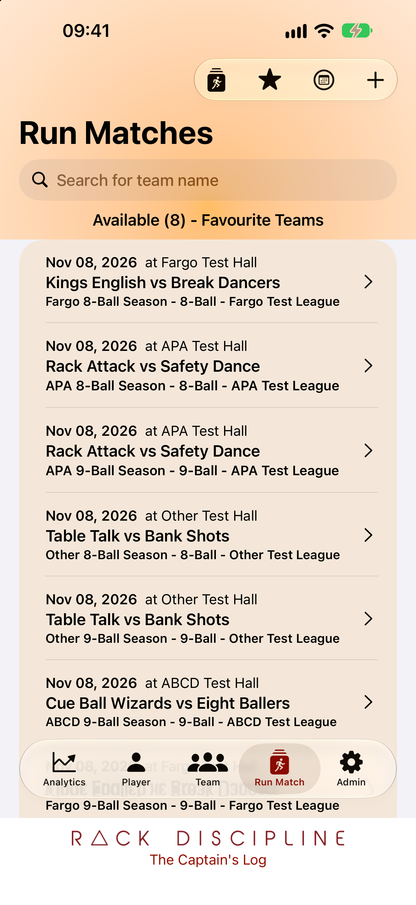
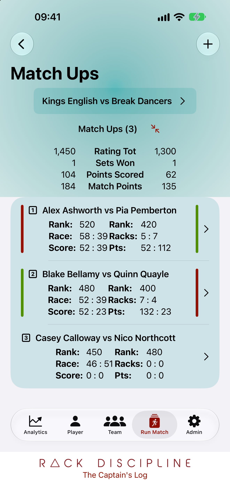
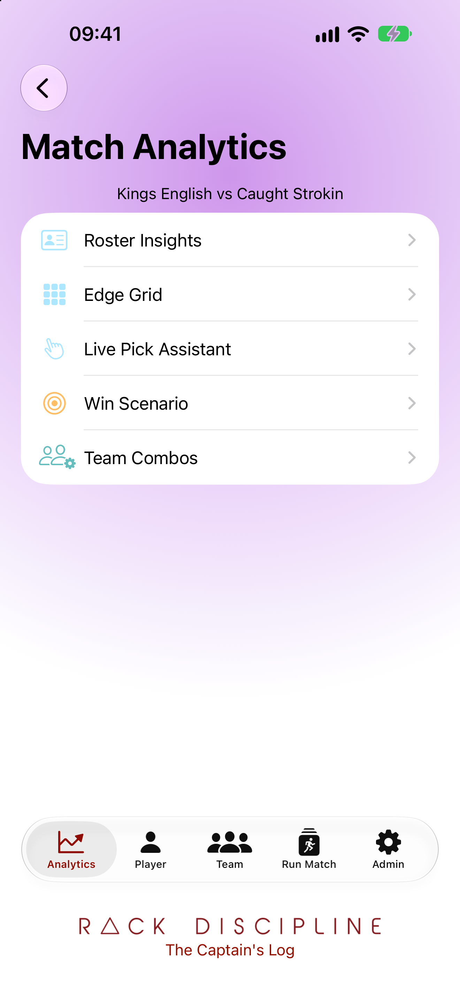
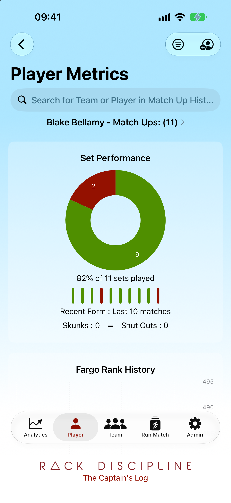
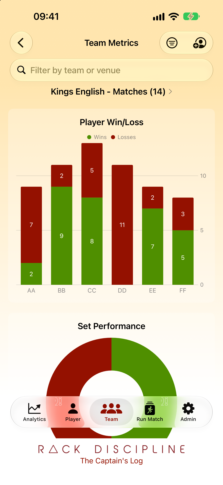
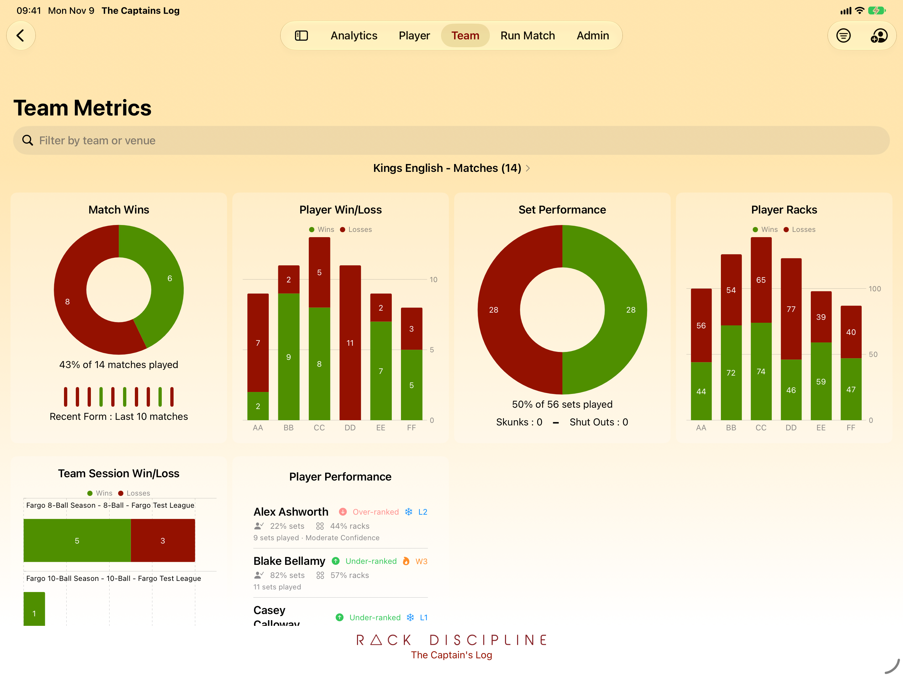
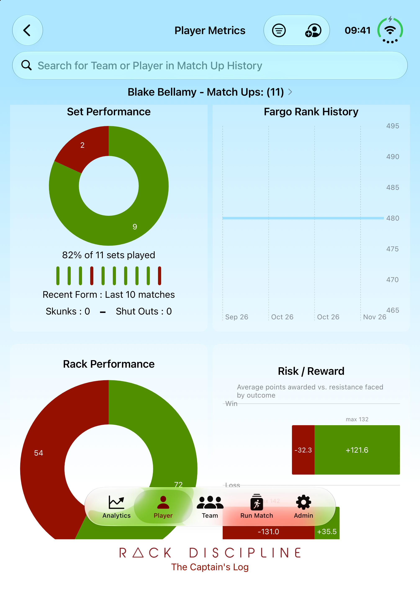

Matches
Build your database over time. Track results for your teams across multiple seasons and events. Capture as much (or little) data as you like. Supports Fargo, APA, ABCD and other ranking formats.

For team captains
Pick better lineups from real match history — track results and player form so match night decisions come from data, not guesswork.
Designed for team captains to track player performance over time and improve team results. Capture match results manually, import from a CSV, or from your league's public website (LMS only). Use your data when it matters — match night.

Build your database over time. Track results for your teams across multiple seasons and events. Capture as much (or little) data as you like. Supports Fargo, APA, ABCD and other ranking formats.

Track results of each matchup in your matches, and follow player performance against their opponents.

Analytics put matchup data at your fingertips. The more data you have, the clearer your view. Multiple views to support decision making on match night.

Track player performance over time and provide insights into how the whole team plays. Win/loss record, recent form and rank history, with support for BCA (A–D), Fargo Rate, and APA (2–7) ranking systems.

Team-level metrics measure each player's contribution and keep competition healthy inside your roster.
Data sharing is available with a subscription.

Same data, same features, a clearer view. iCloud keeps your data in sync across your devices.

Bigger than an iPhone, smaller than an iPad — the best of both worlds?